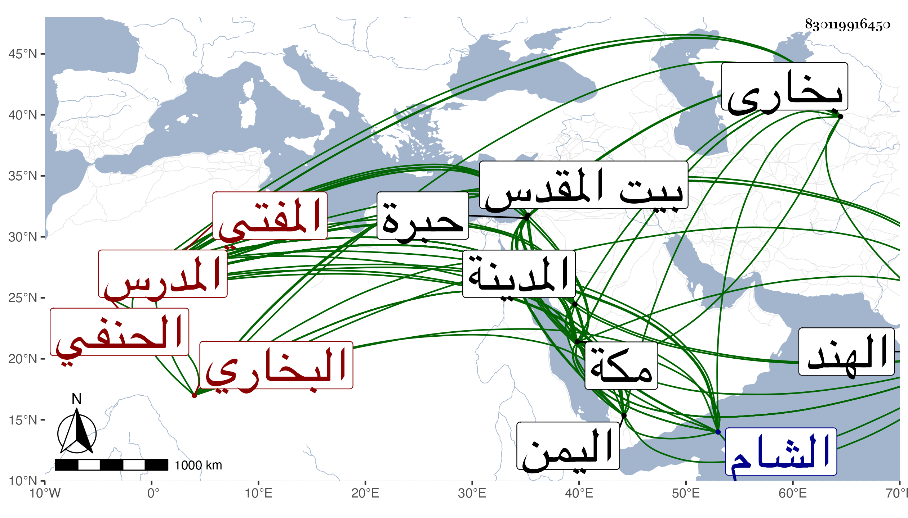

0902Sakhawi.DawLamic.ITO20230111-ara1.EIS1600.830119916450
Biography ID: 830119916450
132
علي بن نور الله بن عبد الله الزين المدعو ملا علي البخاري الحنفي نزيل مكة وحفيد العالم المدرس المفتي شمس الدين حسبما قاله لي . ولد تقريبا بعيد الأربعين وثمانمائة ببخارا ونشأ بها فأخذ الصرف عن ملا بدر الدين الصرافاني والنحو عن درويش ويسيرا في المنطق عن ملا محمد الكيلاني ثم تحول منها وخدم السيد العلاء بن السيد عفيف الدين وقرأ بعض الكافية عليه ثم اختص بولده السيد عبيد الله وأخذ عنه في المختصر وغيره ورافقه لمكة وغيرها ، وكذا زار القدس والخليل وطاف البلاد ، وكان دخوله مكة في سنة ست وسبعين فدام بها ست سنين ثم سافر منها لجهات ثم عاد إليها بعد أربع سنين واستمر بها إلى أن فارقناه في موسم سنة أربع وتسعين وأخذ فيها عن عبد المحسن الشرواني في شرح العقائد والمطول مع حاشية السيد وبعده لازم لطف الله في أشياء منها الطب بل قرأ عليه فقه الحنفية مع كون الشيخ شافعيا وكذا قرأ على غيره في الفقه وأصوله ، وزوجه عبيد الله أم ولده إبراهيم فرباه ولزم بيتهم بحيث عرف بهم وأقرأ في النحو والصرف وغيرهما المبتدئين ولازمني في سنة ثلاث وتسعين والتي تليها بل وفي المجاورة قبلها وأخذ عني أشياء وكتب الابتهاج من تصانيفي وقرأه ، وفي غضون إقامته بمكة زار المدينة غير مرة ، وهو إنسان خير كثير الأدب والسكون مديم الطواف ، كتبت له إجازة هائلة بل سمع علي قبل ذلك في ربيع الثاني في سنة ست وثمانين قطعة من أول البخاري وآخره مع مصنفي في ختمه عمدة القارئ والسامع وثلاثيات البخاري وثلاثيات الدارمي وفي جمادى الأولى المجلس الأخير من المشكاة للخطيب ولي الدين أبي عبد الله التبريزي وأوله ذكر اليمن والشام وذكر أويس القرني وختم المشارق وأوله عن أبي هريرة اللهم بارك لنا في تمرنا وبارك لنا في مدينتنا الحديث وفي جمادى الثانية جميع مسند الشافعي وقصيد أبي حيان ورياض الصالحين ومن الباب الثالث في القول التام إلى آخر الكتاب وفي رجب جميع الشفا وذخر المعاد في وزن بانت سعاد للبوصيري والختم من شرحي للألفية وفي رمضان سبعة مجالس من أبي داود ، ثم سخط عليه عبيد الله وأمه وأبعداه فسافر بزوجته إلى الهند بعد أن أخذ إبراهيم من أمه ثم عاد لمكة وقد تريش قليلا فحج في سنة ثمان وسبعين ورجع .
